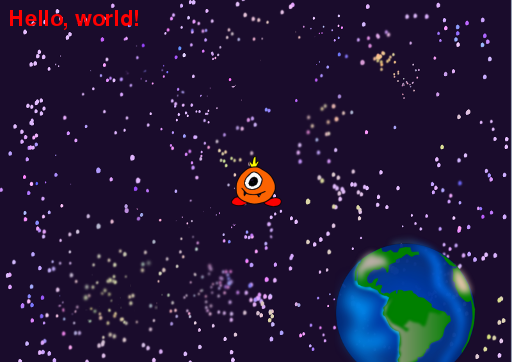

You can use your setup function to add additional graphics objects to the foreground of your sketch...
from sc8pr import Sketch, Image
from sc8pr.sprite import Sprite
from sc8pr.text import Text
def setup(sk):
sk.bg = Image("sky.png") # Load and set background image
hello = Text("Hello, world!") # Create a text message
alien = Sprite("alien.png") # Create a sprite
sk += alien, hello # Add sprite and text to sketch
Sketch((512,362)).play() # Create and run the sketch
In the example above, we are loading an image from the file “alien.png” and using the image to create a sprite — an interactive, animated character or object. We are also creating a text object. The final statement of the setup function adds the text and the alien sprite to the sketch using the sketch’s += operator.
If you run the program using these image files, the sketch should look like this...

You will notice that the alien sprite and the text message are drawn in the upper left corner and are only partly visible on the screen. This happens because we have not provided any information about the positions or sizes of these graphics. Using the local variable hello which refers to the text object, we can configure the appearance by adding the following instruction to the setup...
hello.config(pos=(8,8), anchor=TOPLEFT, color="red", fontSize=32)
The config method lets us adjust the properties of the graphics object. All of the arguments are passed by keyword and can be in any order. The color and fontSize keywords should be self-explanatory. The pos keyword is used to set the object’s position. sc8pr uses the pygame coordinate system where (0, 0) refers to the pixel at the top left of the sketch window, and (511, 361) refers to the lower right pixel for our sketch size of 512 × 362.
By default, sc8pr graphics are anchored to their center; sc8pr will draw the objects with their centers at the specified coordinates. We have changed the text object’s anchor to TOPLEFT so that the text is drawn with its top left corner at the coordinates (8, 8). The anchor constants — CENTER, TOP, BOTTOM, LEFT, RIGHT, TOPLEFT, TOPRIGHT, BOTTOMLEFT, BOTTOMRIGHT — must be imported from the sc8pr module.
Now let’s configure the alien sprite by positioning it at the center of the sketch, and reducing its size...
alien.config(pos=sk.center, width=sk.width/10)
The sketch should now look like this...

When you resize the sprite using the width keyword, sc8pr will adjust the height to maintain the original aspect ratio. Similarly, if you use the height keyword, the width will be adjusted automatically. If you want to scale the image to change the aspect ratio, use the size keyword rather than width or height.
Sprite and Text are only two of several different classes of graphics objects you can use in sc8pr. Here are the graphics classes currently available...
| Description | Classes |
|---|---|
| Simple Graphics | Text Image Circle* Polygon* Line |
| Animated Graphics | Sprite Video* Locus |
| GUI Controls | Button TextButton CanvasButton Options Radio TextInput ProgressBar Slider |
| Miscellaneous | Canvas Plot* Robot |
*Each graphics class marked by an asterisk has a corresponding sprite version named CircleSprite, VideoSprite, etc.